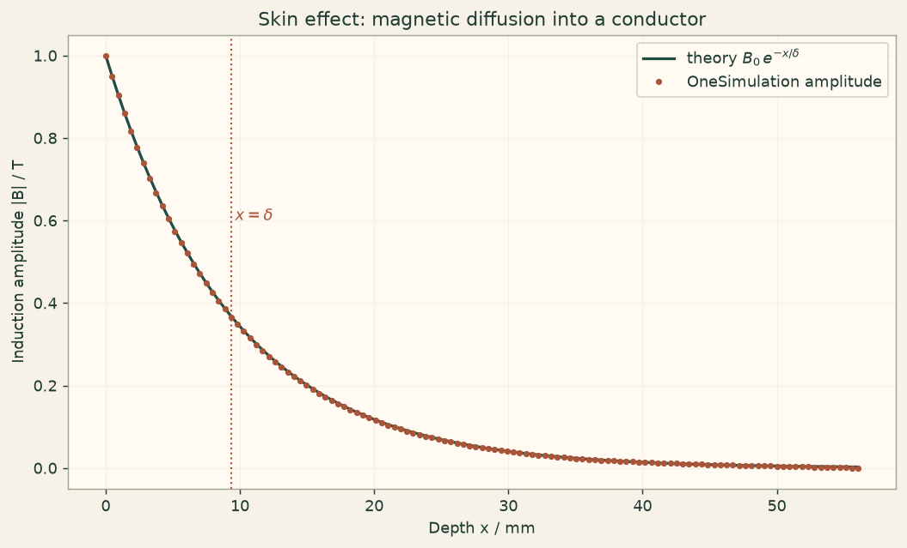

Docs › Examples › Magnetic diffusion and the skin effect
Magnetic fields · 1D
Magnetic diffusion and the skin effect
A sinusoidal surface field diffusing into a conductor, graded against the skin-depth law.

What it computes
OneSimulation integrates one-dimensional magnetic diffusion in a conductor driven by a sinusoidal surface field.
What it checks
The amplitude decays as B0 exp(-x/delta) with delta = sqrt(2/(mu sigma omega)); the fitted skin depth is within about 0.4 %.
The notebook
The complete notebook, cell by cell. Run it to produce the figures and the comparison printout.
A thick conductor fills the half-space \(x>0\). A magnetic induction is imposed at its surface and oscillates sinusoidally in time, \(B(0,t)=B_0\sin(\omega t)\). Inside the conductor the field obeys the magnetic diffusion (induction) equation
where \(\mu\) is the permeability and \(\sigma\) the electrical conductivity. OneSimulation solves this 1D transient problem with finite elements (Lagrange order 2) and a BDF2 time step on a real line mesh.
Reference. After the initial transient dies out, the solution settles into the classical travelling, exponentially damped wave
so the oscillation amplitude decays as \(|B(x)|=B_0\,e^{-x/\delta}\) with the skin depth \(\delta\). We verify both the exponential decay and the value of \(\delta\).
from importlib.metadata import version
from math import pi, sqrt
import numpy as np
import matplotlib.pyplot as plt
from onesim.cad.d1 import Line
from onesim.meshing import StructuredLineMesher
from onesim.numerics import Numerics
from onesim.numerics.fem import FiniteElement, Lagrange, Nitsche
from onesim.numerics.linear import SparseDirect
from onesim.numerics.nonlinear import Newton
from onesim.numerics.time import BDF, BackwardEuler
from onesim.physics.electromagnetics import MagneticDiffusion
from onesim.simulation import Problem, Simulation
from onesim.simulation.initial_conditions import InitialValue
from onesim.simulation.problem_definition.boundaries import (
PrescribedValueBoundary,
)
print("OneSimulation:", version("onesimulation"))Parameters
Copper at mains frequency: a non-magnetic conductor (\(\mu=\mu_0\)), driven at 50 Hz. The resulting skin depth is a few millimetres, so the modelled slab is only a few centimetres thick; the far face stays essentially field-free.
mu = 4.0 * pi * 1e-7 # H/m, permeability (copper is non-magnetic)
sigma = 5.8e7 # S/m, electrical conductivity of copper
B0 = 1.0 # T, surface induction amplitude
frequency = 50.0 # Hz
omega = 2.0 * pi * frequency
eta = 1.0 / (mu * sigma) # magnetic diffusivity, m^2/s
delta = sqrt(2.0 / (mu * sigma * omega)) # skin depth, m
period = 1.0 / frequency
L = 6.0 * delta # slab thickness: several skin depths
print(f"diffusivity eta = {eta:.4e} m^2/s, skin depth delta = {1e3*delta:.3f} mm, slab L = {1e3*L:.1f} mm")
line = Line(start=(0.0, 0.0, 0.0), end=(L, 0.0, 0.0))
model = MagneticDiffusion(domain=line.line, permeability=mu, conductivity=sigma)
# Many cells across the slab so the thin skin layer is well resolved.
cells = 120
mesh = StructuredLineMesher(cells=cells).generate(line)
print("Mesh:", mesh.cell_count, "line cells (", round(L / cells / delta * 1e3, 2), "cells per mm;",
round(delta / (L / cells), 1), "cells per skin depth )")
problem = Problem(
name="Magnetic diffusion skin effect",
geometry=line,
physics=(model,),
boundary_conditions=(
# Driven surface: sinusoidal induction in time.
PrescribedValueBoundary(
physics=model, boundary=line.boundaries.start,
value=lambda time, coordinate: {"magnetic_induction": B0 * np.sin(omega * time)},
),
# Far face held field-free (it lies several skin depths deep).
PrescribedValueBoundary(
physics=model, boundary=line.boundaries.end,
value=lambda time, coordinate: {"magnetic_induction": 0.0},
),
),
initial_conditions=(InitialValue(model.magnetic_induction, lambda x, y, z: 0.0),),
)
simulation = Simulation(
problem=problem,
mesh=mesh,
numerics=Numerics(
spatial=FiniteElement(element=Lagrange(order=2), quadrature_order=5,
boundary_enforcement=Nitsche()),
linear_solver=SparseDirect(),
nonlinear_solver=Newton(linear_solver=SparseDirect(), jacobian="analytic",
absolute_tolerance=1e-13, relative_tolerance=1e-12),
time_integrator=BDF(order=2, startup=BackwardEuler()),
),
)
simulation.validate().require_valid()
# Run ten periods so the start-up transient has decayed and the response is periodic.
end_time = 10.0 * period
time_step = period / 40.0
result = simulation.run(start_time=0.0, end_time=end_time, time_step=time_step)Amplitude envelope over the last period
Over the final oscillation period we sample the field along the slab and take, at each depth, the peak magnitude. In the periodic regime this is the amplitude envelope \(|B(x)|\), which skin-effect theory predicts to be \(B_0 e^{-x/\delta}\).
stored = np.asarray([float(t) for t in result.times])
last_period = [t for t in result.times if float(t) >= end_time - period - 1e-12]
sample_x = np.linspace(0.0, L, 121)
field = result.field(model.magnetic_induction)
amplitude = np.zeros_like(sample_x)
for t in last_period:
pts = np.column_stack((sample_x, np.zeros_like(sample_x), np.zeros_like(sample_x)))
b = np.asarray(field.evaluate(pts, time=float(t))).reshape(-1)
amplitude = np.maximum(amplitude, np.abs(b))
# Compare in a clean window: away from the driven surface node and from the deep
# far-field floor where the signal is numerically tiny.
window = (sample_x >= 0.5 * delta) & (sample_x <= 4.0 * delta)
x_fit = sample_x[window]
a_fit = amplitude[window]
reference = B0 * np.exp(-x_fit / delta)
rel_error = np.max(np.abs(a_fit - reference) / reference)
print(f"Max relative deviation of the amplitude envelope from B0*exp(-x/delta): {100*rel_error:.2f} %")
# Independent check: the slope of ln|B| versus x recovers the skin depth.
slope, intercept = np.polyfit(x_fit, np.log(a_fit), 1)
delta_measured = -1.0 / slope
delta_error = abs(delta_measured - delta) / delta
print(f"Skin depth: theory {1e3*delta:.3f} mm, fitted {1e3*delta_measured:.3f} mm "
f"({100*delta_error:.2f} % deviation)")
assert rel_error < 0.05, "Amplitude envelope deviates more than the 5 % example tolerance."
assert delta_error < 0.03, "Fitted skin depth deviates more than 3 % from theory."
# Physical sanity: the envelope decays monotonically into the conductor.
mono = amplitude[(sample_x >= 0.25 * delta) & (sample_x <= 4.5 * delta)]
assert np.all(np.diff(mono) <= 1e-9), "The amplitude must decay monotonically with depth."Figure
cream = "#fbf5eb"
fig, ax = plt.subplots(figsize=(8, 4.8), constrained_layout=True)
fig.patch.set_facecolor(cream); ax.set_facecolor("#fffaf2"); ax.grid(alpha=0.25)
xs_mm = sample_x * 1e3
ax.plot(xs_mm, B0 * np.exp(-sample_x / delta), color="#214D43", lw=1.8,
label=r"theory $B_0\,e^{-x/\delta}$")
ax.plot(xs_mm, amplitude, "o", color="#A85539", ms=3, label="OneSimulation amplitude")
ax.axvline(1e3 * delta, color="#A85539", ls=":", lw=1.2)
ax.text(1e3 * delta + 0.3, 0.6, r"$x=\delta$", color="#A85539")
ax.set(xlabel="Depth x / mm", ylabel="Induction amplitude |B| / T",
title="Skin effect: magnetic diffusion into a conductor")
ax.legend()
plt.show()Going further
Raise the drive frequency and watch the skin depth shrink as \(\delta\propto1/\sqrt{\omega}\), concentrating the field ever closer to the surface. Replace copper with a ferromagnetic conductor (larger \(\mu\)) to see the skin depth fall further, or switch the surface condition to a sudden step to recover the complementary error-function diffusion front.